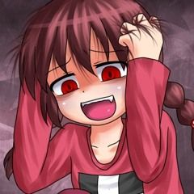
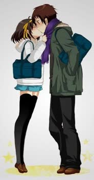
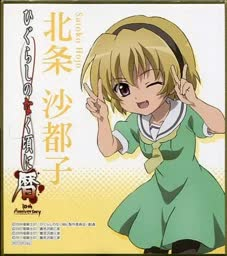
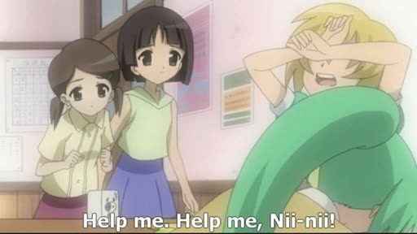
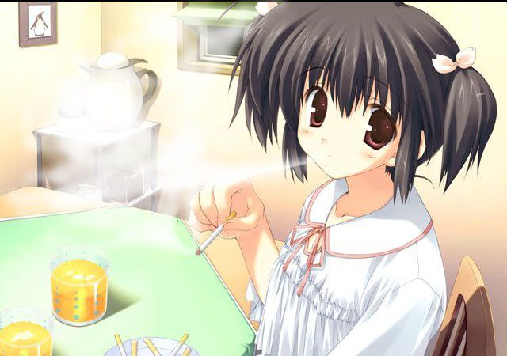

Just now, you looked like my real Nii-nii.- Satoko Houjou
I'll be 20 in around two weeks. That's not fun, I don't like birthdays in the first place. I thought I'd be different or things would sort themselves out by now. But here I am now, a little more self-aware and stuck in a limbo of not wanting to stay like a kid in the system but not knowing how to live outside of it.
I think that a lot of us used to wish (or still wish) to wake up in some idealized Japanese high school anime universe. A world where I fluently speak Japanese without even studying it, surrounded by frens who get me, a quiet girl falls for me just because I'm "kind," and my only concern would be showing up in club meetings instead of taxes or internships or whatever. Be honest, even you just want this at the end of the day:

...but I'm not in a VN, and all there is is just deadlines, guilt, or whatever noises I have inside.

I really, really cried over Satoko. Like, I buried my head in a pillow a few days ago and just endlessly cried silently. It wasn't even the violent scenes, but just the way she called out "Nii-nii..." desperately. As if her brother figure would come back and make everything okay if she just believed hard enough. I remember even yelling at the screen and punching the bed like an ape when they asked her about the injections in Kai. But even if Satoko hugged me, called me her "Nii-nii" or her "hero" and pat my head... I'd probably cry again (and I did, lol). Because I'd feel unworthy of it. I'm just shameful, especially with that presence of kindness.

The other day, I watched a little bit of Key: The Metal Idol (very underrated and forgotten anime btw), just because I want to. Just because. That's kind of a weirdly radical thing to do when my head is constantly saying that I'm not doing enough. Same thing happened with a bit of Linux tinkering stuff, where I built a Git server and frontend just because I could (EDIT: it's removed now since it's unused lmao). It kinda still felt right despite it didn't help me with anything "productive." But I still have some internal pressure of either mastering them or quitting them, but I get it. I can just keep a little time to do just whatever I want every week; maybe it'll be a day in a week, I dunno.
And yes, some people thought maybe that I'll "make it" or whatever, I've always had a pressure from myself to be someone worth following. Someone people would look up to or feel less alone with. But sometimes, I feel like I'm being just as any other dude ranting in videos. I worried if people didn't take me seriously. But if one person got what I said or found, that's just enough (even if silently, I guess). I've also realized that maybe I don't need to keep making videos unless I want to. Writing is just more quiet and doesn't demand my voice. I'm not doing it for fame or feedback. Just so that another lain might pass and think that I am (or was/will) where he is. But sometimes I still oversleep, or rot in front of the screen watching fringe obscure history while I eat a whole bar of Milka chocolate lmao.
I don't really know how to be an adult. I still live with my parents. I've never had a job. I cook sometimes or study on my own in an outdated curriculum. And to this moment, I dunno if I'm just venting or actually doing something about it.
Sometimes I woke up earlier than I used to or stopped being obsessed over some books by telling myself to read them 6 months later. But I guess that's what "becoming 20" is.
